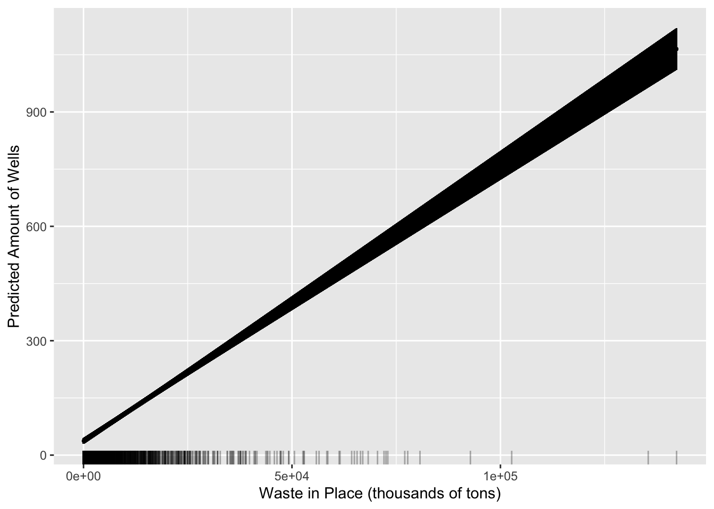
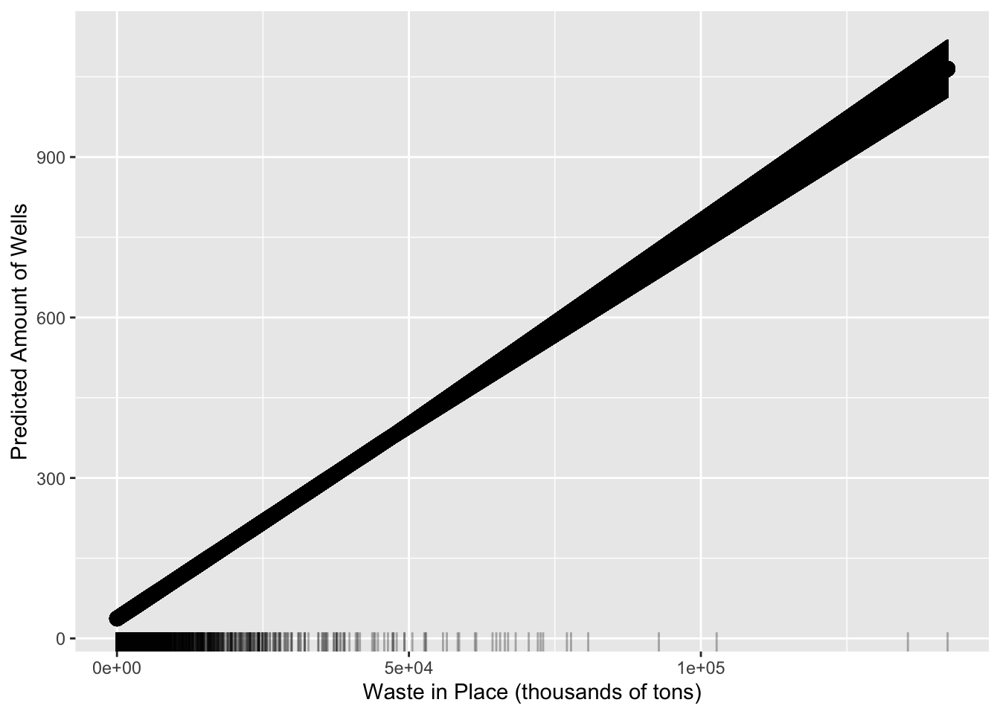
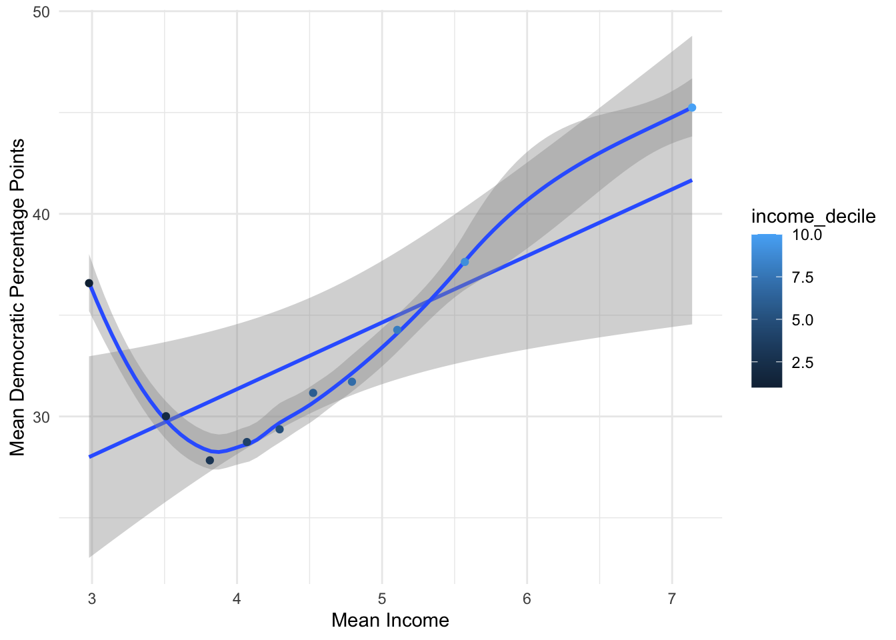
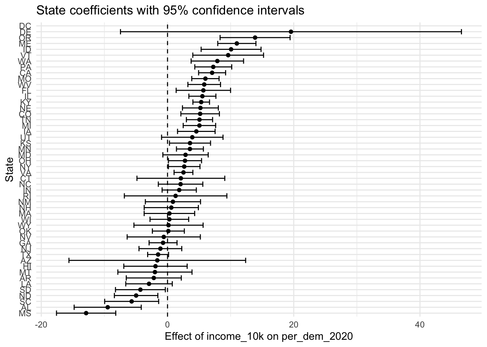

── Conflicts ────────────────────────────────────────── tidyverse_conflicts() ──
✖ dplyr::filter() masks stats::filter()
✖ dplyr::lag() masks stats::lag()
ℹ Use the conflicted package (<http://conflicted.r-lib.org/>) to force all conflicts to become errors
library(ggplot2)library(broom)
Warning: package 'broom' was built under R version 4.5.2
library(modelsummary)
Warning: package 'modelsummary' was built under R version 4.5.2
The Environmental Protection Agency houses the Landfill Methane Outreach Program (LMOP). The LMOP has a database which contains information such as the physical address, latitude and longitude, owner/operator organization, operational status, year opened, actual or expected closure year, design capacity, amount of waste in place, gas collection system status and landfill gas (LFG) collected amount for 2,641 (observations) municipal solid waste landfills.
# A tibble: 2,641 × 42
ghgrp_id landfill_id landfill_name state landfill_alias physical_address
<dbl> <dbl> <chr> <chr> <chr> <chr>
1 1007341 1994 Anchorage Regiona… AK <NA> "15500 E. Eagle…
2 1010389 11941 Capitol Disposal … AK <NA> "5600 Tonsgard …
3 1005349 12216 Central Peninsula… AK Soldotna Land… "46915 Sterling…
4 NA 10960 Kodiak Island Bor… AK <NA> "1203 Monashka …
5 1004380 11020 Merrill Field Lan… AK <NA> "800 Merrill Fi…
6 1011448 10980 Palmer Central La… AK Matanuska-Sus… "1201 N. 49th S…
7 1006806 10961 South Cushman Lan… AK Fairbanks Nor… "455 Sanduri St…
8 NA 11000 Unalaska Landfill AK <NA> "1181 Summer Ba…
9 1001297 10860 Arrowhead Landfill AL Perry County … "On Cahaba Road…
10 NA 27 Athens/Limestone … AL <NA> "Strain Road\r\…
# ℹ 2,631 more rows
# ℹ 36 more variables: city <chr>, county <chr>, zip_code <chr>,
# latitude <dbl>, longitude <dbl>, composting <chr>, ownership_type <chr>,
# landfill_owner_organization_s <chr>, landfill_operator_organization <chr>,
# year_landfill_opened <dbl>, landfill_closure_year <dbl>,
# current_landfill_status <chr>, design_landfill_area_acres <dbl>,
# current_landfill_area_acres <dbl>, design_landfill_depth_feet <dbl>, …
Wells at landfills are used to manage environmental impacts by capturing hazardous landfill gas like methane and carbon dioxide and monitoring groundwater. It would rational to believe that landfills with the highest quantities of waste should have more wells in place to prevent the seepage of harmful substances into groundwater.
I predict that higher tons of waste held (X) will result in more wells being placed (Y). I will control for whether the landfill is currently open or closed (Z). Regardless of its current operations, we should be able to see how frequent safeguards against environmental degradation were put into place. I will scale down the X variable because of its magnitude. My control variable, “current landfill status,” is categorical so I will mutate a dummy variable for the sake of running my model.
land_mod =lm( number_of_wells ~ waste_in_place_thousand_tons + current_landfill_status, data = new_landfills)modelsummary(land_mod,title ="Outcome: Number of Wells in Landfills",stars =TRUE,gof_omit ="IC|Log|Adj|F|RMSE",coef_rename =c("(Intercept)"="Intercept","waste_in_place_thousand_tons"="Waste in Place (thousands of tons)","current_landfill_status"="Open or Closed" ))
Outcome: Number of Wells in Landfills
(1)
+ p < 0.1, * p < 0.05, ** p < 0.01, *** p < 0.001
Intercept
39.843***
(5.128)
Waste in Place (thousands of tons)
0.007***
(0.000)
Open or Closed
-5.782
(6.075)
Num.Obs.
1059
R2
0.548
When comparing landfills, regardless of being opened or closed, landfills with a thousand more tons of waste will increase the amount of wells by approximately 0.007. In more practical terms, holding landfill status constant, each additional million tons of waste in place is associated with approximately 7 more wells.
I will cross the to find all the possible combinations of values from the most to least amount of waste in place.
# ---- Visualize the marginal effect of income ----ggplot(preds, aes(x = waste_in_place_thousand_tons, y = .fitted)) +geom_point(size =0.5) +geom_errorbar(aes(ymin = .lower, ymax = .upper), width =0.2) +geom_line(linewidth =1) +geom_rug(data = new_landfills, aes(x = waste_in_place_thousand_tons),inherit.aes =FALSE, alpha =0.3, sides ="b") +labs(x ="Waste in Place (thousands of tons)",y ="Predicted Amount of Wells" )
Warning: Removed 466 rows containing missing values or values outside the scale range
(`geom_rug()`).

ggplot(preds, aes(x = waste_in_place_thousand_tons, y = .fitted)) +geom_point(size =3) +geom_errorbar(aes(ymin = .lower, ymax = .upper), width =0.2) +geom_line(linewidth =1) +geom_rug(data = new_landfills, aes(x = waste_in_place_thousand_tons),inherit.aes =FALSE, alpha =0.3, sides ="b") +labs(x ="Waste in Place (thousands of tons)",y ="Predicted Amount of Wells" )
Warning: Removed 466 rows containing missing values or values outside the scale range
(`geom_rug()`).

This graph displays the difference in well amounts between landfills with various amounts of held waste in thousand of tons. Given the concentration of landfills with less than 50,000 tons of waste, there is more confidence in witnessing the amount of wells in place. With less data in the higher amounts of waste, there is less confidence in the output of wells. Given the magnitude of this data-set, it is difficult to observe the marginal effects of my treatment.
Question 2
The intercept of the line is the result of taking the average of Y and adjust by the average and slope of X.
Warning: Removed 1 row containing non-finite outside the scale range
(`stat_smooth()`).
`geom_smooth()` using method = 'loess' and formula = 'y ~ x'
Warning: Removed 1 row containing non-finite outside the scale range
(`stat_smooth()`).
Warning: Removed 1 row containing missing values or values outside the scale range
(`geom_point()`).

The loess function allows the line of “best fit” to follow the scatter points better than our regression line. The two lines do not truly converge anywhere which implies that the relationship between income decile placement and average democratic vote share points is not a linear one. However, as income rises from the 4th to the 5th decile placement, both the regression line and loess line move in the same direction, implying that income is positively related to democratic vote share. It would be interesting to qualitatively explore the heightened vote share amount in the lower income range.
Question 4
I want to look at two states that vary in region and overall culture. I will pick North Carolina and California.
California has a slope of 14.30 while NC sits at a more plateau slope of 6.63. An increase in mean income results in an average 14.3 vote-share for democrats in California versus the 6.63 point increase in NC. California is an objectively more democratic region with higher wage earnings than North Carolina, so this makes sense.
I will now scale this up for every state.
nested_elections = small_elections %>%drop_na(per_dem_2020, income_10k) %>%nest(.by = state) %>%# Comprise the data into a list-columnmutate(# Fit model to each nested columnmodel =map(data, ~lm(per_dem_2020 ~ income_10k , data = .x))) %>%# Extract tidy coefficientsmutate(tidy_results =map(model, tidy, conf.int =TRUE)) %>%unnest(tidy_results) %>%filter(term =="income_10k")
Warning: There was 1 warning in `mutate()`.
ℹ In argument: `tidy_results = map(model, tidy, conf.int = TRUE)`.
Caused by warning in `qt()`:
! NaNs produced
When grouping by state, the nest function (“nest()”) collapses all rows into a single row by the intended variable, to represent a new group. The map (“map()”) function helps our model fit within our new scaled and nested row. Finally, the unnest function (“unnest()”) reverses the work of the nest function and will put each state back into it’s own row.
# Create coefficient plotggplot(nested_elections, aes(x = estimate, y =reorder(state, estimate))) +geom_point() +geom_vline(xintercept =0, linetype ="dashed") +geom_errorbarh(aes(xmin = conf.low, xmax = conf.high)) +labs(x ="Effect of income_10k on per_dem_2020",y ="State",title ="State coefficients with 95% confidence intervals" ) +theme_minimal()
Warning: `geom_errorbarh()` was deprecated in ggplot2 4.0.0.
ℹ Please use the `orientation` argument of `geom_errorbar()` instead.
Warning: Removed 1 row containing missing values or values outside the scale range
(`geom_point()`).

The effect of income is not congruent across all states nor is income’s effect on vote-share significant for all states. A good concentration of southern states have negative effects of income on democratic vote share while states within the midwest and northeast possess a positive effect of income. This could be a result of higher wages and stronger democratic partisan efforts in those states. However, states like Florida, Tennessee, and Virginia all have coefficients above 0; however, these are states with notable inequitable wealth distributions.
# A tibble: 2 × 4
south n var_income weight
<dbl> <int> <dbl> <dbl>
1 0 1969 1.27 2490.
2 1 1142 1.43 1628.
There is more weight in the non-south group. This is understandable given the larger amount of states that are not southern which would also result in more variance.